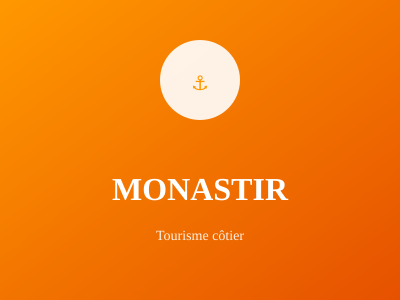

Ville natale de Bourguiba

Ville balnéaire réputée, Monastir est la ville natale de Habib Bourguiba, fondateur de la Tunisie moderne. Elle combine patrimoine historique, tourisme côtier et station balnéaire moderne.